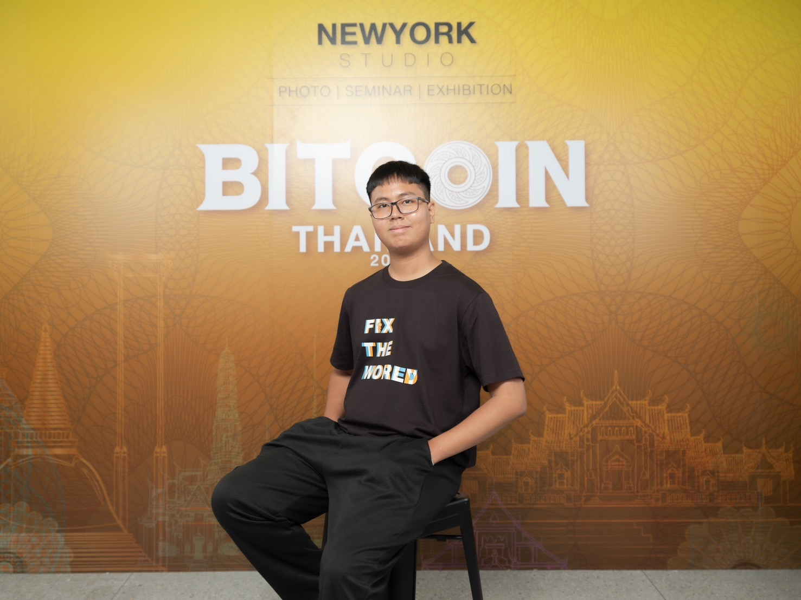
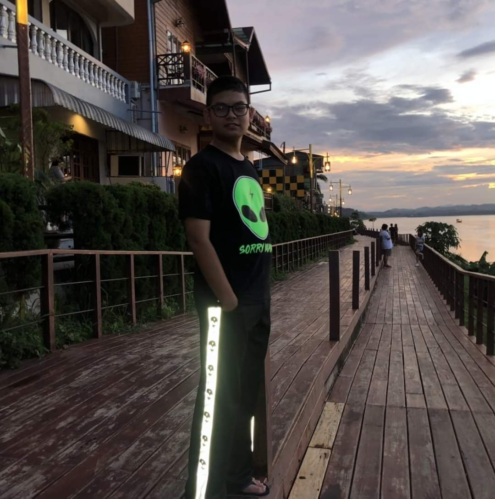

friend1's future hilights
When I graduate, I want to study abroad and become a professor.
Natcha Wattanawaitunechai
3 targets of my future
1. Having wonderful times in univesity
2. Having great job and enough salary
3. Having a happy life

Nuttasorn Puneenakoon
In Terms Of Future Work
🍎After graduation, I aim to work as a Software Developer, particularly in a company that develops technology for education.
I believe that learning is a key factor in improving people's lives.
Additionally, I plan to further my studies in Artificial Intelligence (AI) to enhance my expertise in developing programs that can learn and adapt in the future.
I hope that in the next five years, I will be able to develop applications that benefit education and society on a larger scale.
🌐Dreams For The Future
🍎I will be good at programming to the point where I can go to work in Japan, get married, have a family, and be happy every day.
Parncheewa Udeye
In the future, I see myself graduating with a Computer Science degree from Thammasat University, ready to take on new challenges. I plan to work at a tech company, gaining valuable experience and building connections. Along the way, I want to use my knowledge to support and enhance my family business, applying what I’ve learned to help it grow and succeed. At the same time, I’ll keep exploring new interests and balancing personal growth with career aspirations to create a meaningful and fulfilling life.

Pongsaphak Eamod
My future aspiration is to work as a data analyst or data scientist in one of the top financial companies, such as KBTG, SCBx, BBL, or KTB. However, if the opportunity arises, I would also like to explore working with international companies. My goal is to earn substantial income to build wealth and establish new connections for my family. Additionally, I want to become truly financially independent, enabling me to contribute productively to the world without having to worry about profit and loss.
Pontakorn Kasemsawat
In the future, after i graduate, I think i will be working in the tech industries although I don't know which field to work in yet but I look forward to exploring different fields and learning from others in the Industry
Saroj Pramkaew
In the part of a semester.
I have studied many subjects that make me think about connecting various things, such as Statistics, C language, preliminary Web Applications and The coolest subject is Discrete math.
My path became more clear.
I'm also interested in Software development and AI Machine Learning but still can't decide on a future job. However, I would like to do some business in abroad.
It is expected that these things will not only in Thailand but the whole world will be aware of.
Then when I have more enough experience of my work. I will pass on knowledge to children.